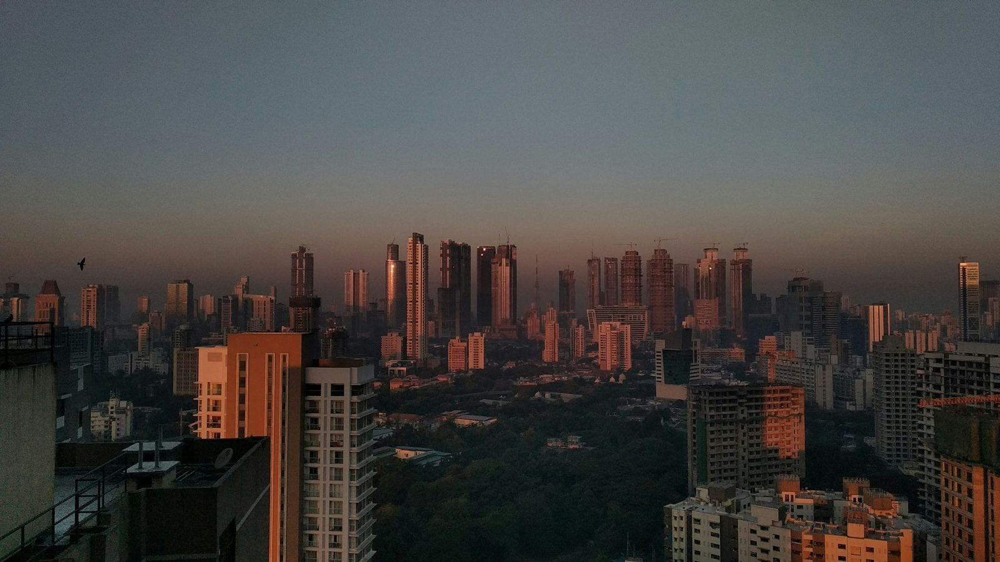

국내 리전 GPU 추론 호스팅
GPU 서버를
분 단위로 빌립니다
모델을 올리고 등급 · 대수 · 리전을 고르면 평균 94초 뒤 요청을 받습니다. 시간당 1,890원부터.
| 배포 | 등급 | 리전 | 상태 | 토큰/초 | 가동 |
|---|---|---|---|---|---|
| law-search-prod | G48 | 서울 | 실행 | 412 | 41일 3시간 |
| law-search-stage | G24 | 서울 | 실행 | 188 | 6일 11시간 |
| qa-vision-batch | G48 | 춘천 | 실행 | 296 | 128일 |
| chat-ko-70b-a | G80 | 서울 | 실행 | 534 | 17일 2시간 |
| chat-ko-70b-b | G80 | 부산 | 대기 | — | 배정 대기 |
- 14:19:58 deploy chat-ko-70b-b · busan · G80 배정 대기(2/2)
- 14:19:41 scale law-search-prod 2 → 2 · 변경 없음
- 14:19:12 health qa-vision-batch · 정상 · 296 tok/s
- 14:18:55 key sk-…7f2a 사용 · 분당 요청 214
- 14:18:30 deploy law-search-stage · 94초 · 완료
- 14:18:02 bill 11월 누적 4,182,330원

조건을 문장으로
모델 크기와 사용자 수만 적으면
구성과 월 비용이 나옵니다
도우미가 문장을 계산기 값으로 바꾸고 세 가지 안을 냅니다. 이 사이트의 사양표와 요금 규칙으로만 계산합니다.
등급 4종
전체 사양| 등급 | GPU 메모리 | 알맞은 모델 | 시간당 |
|---|---|---|---|
| G24 | 24GB | 7B~13B 모델 · 시험 · 소규모 서비스 | 1,890원 |
| G48 | 48GB | 13B~34B 모델 · 사내 도구 | 3,690원 |
| G80 | 80GB | 34B~70B(4비트) 모델 · 운영 서비스 | 6,490원 |
| G80×8 | 640GB | 70B 이상 · 16비트 대형 모델 | 49,800원 |
첫 요청까지
문서- 01
키 발급
콘솔 「키」에서 새 키를 만듭니다. 키는 만들 때 한 번만 보입니다.
- 02
모델 올리기
모델 파일을 저장소에 올리고 비트(16 · 8 · 4)를 고릅니다.
- 03
배포
등급 · 대수 · 리전을 고르면 평균 94초 뒤 요청을 받습니다.
- 04
첫 요청
배포 주소로 요청을 보냅니다. 응답에 쓴 토큰 수가 같이 옵니다.
G80 · G80×8 은 상담 뒤 배정합니다
모델 크기 · 동시 사용자 · 희망 리전을 알려 주시면 배정 가능한 날짜와 견적을 드립니다.
상담 요청